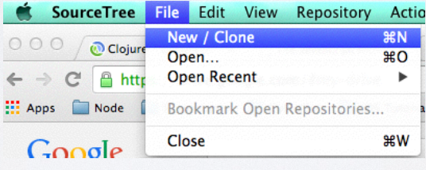
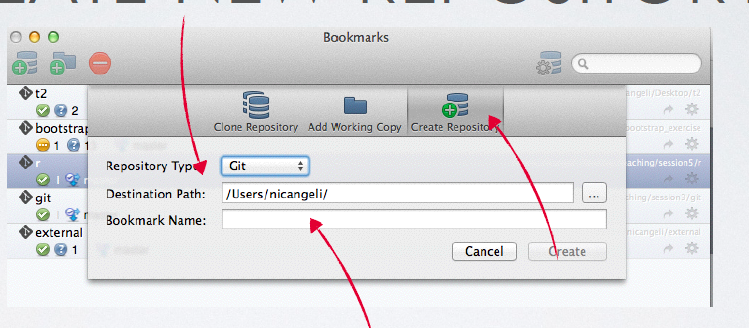
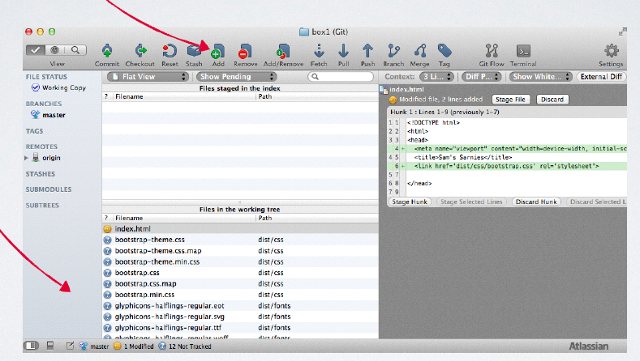
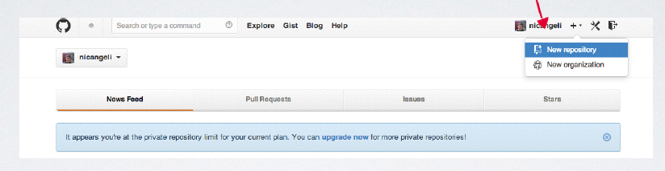
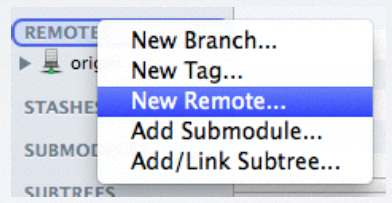
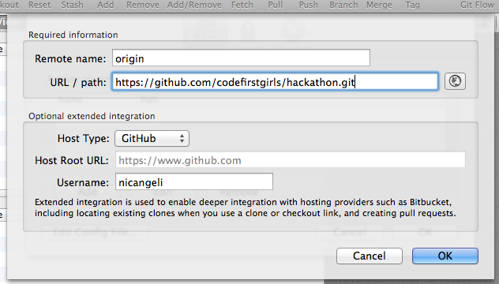
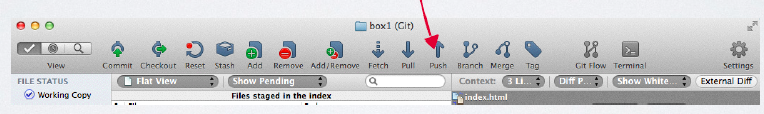
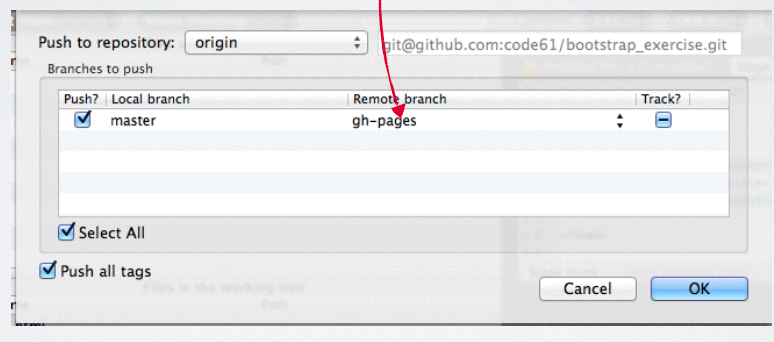
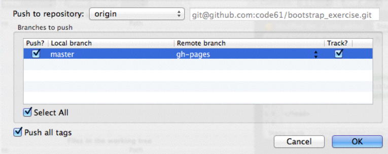

A short taster session into the fundamental technologies powering the world wide web.
Using Git with SourceTree
Remember that Git is a tool developers use to track changes to their code and collaborate with others. You'll need to do all of this at the hackathon - so here's a quick refresher.
Initializing your Git Repository
Before you can use Git with your website you need to initialize it as a Git repository. Fortunately SourceTree makes this really easy.
- Open SourceTree
-
File > New/Clone
 - Create new Repository
- Select Git as the Repository Type
-
Browse to your folder in Destination Path

Adding and Committing Files
Recall that taking a snapshot of your code is actualy a two stage process, the first being add (selecting the files to snapshot) and the second being commit (saving the state of the files).
- Select the files you want to add one by one from the bottom pane
- Hit add for each
-
Select commit from the top bar
 - Type a commit message and hit commit
Pushing your Code to GitHub
Recall that we now have our Git repository setup, but it is only on our local machine. We'd ideally like to host it on the Internet. Enter GitHub.
GitHub let you publicy host your Git repositories for all to see, you can pay to make them private if you want too. We'll use GitHub to host our code and eventually publish it as a website.
- Sign in to your GitHub account
-
Create a new repository
 - Copy the link this generates from the 'HTTP' box
-
Right click Remotes from the left hand pane
 - Create new remote called origin
-
Paste the URL from GitHub into the URL / Path
 -
Push to GitHub

Publishing your Site!
We've now got our code online, but this isn't a website yet! We'd love to be able to show people our creations, right? Fortunately we're only one step off being online!
-
Push to GitHub again, but this time change master to gh-pages
 -
Tick the tracking checkbox!

Voila, your site should be online!
Your website should now be online at: http://username.github.io/repository_name